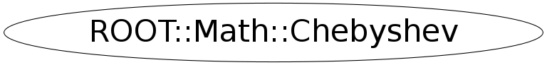

class ROOT::Math::Chebyshev
Class describing a Chebyshev series which can be used to approximate a function in a defined range [a,b] using Chebyshev polynomials. It uses the algorithm from <A HREF="http://www.gnu.org/software/gsl/manual/html_node/Chebyshev-Approximations.html">GSL</A> This class does not support copying @ingroup FuncApprox
Function Members (Methods)
public:
| virtual | ~Chebyshev() |
| ROOT::Math::Chebyshev | Chebyshev(const ROOT::Math::IGenFunction& f, double a, double b, size_t n) |
| ROOT::Math::Chebyshev | Chebyshev(ROOT::Math::GSLFuncPointer f, void* p, double a, double b, size_t n) |
| ROOT::Math::Chebyshev* | Deriv() |
| pair<double,double> | EvalErr(double x) const |
| pair<double,double> | EvalErr(double x, size_t n) const |
| ROOT::Math::Chebyshev* | Integral() |
| double | operator()(double x) const |
| double | operator()(double x, size_t n) const |
protected:
| void | Initialize(ROOT::Math::GSLFuncPointer f, void* params, double a, double b) |
Class Charts
{kind=link}
{kind=link}
{kind=link}
{kind=link}

Function documentation
Chebyshev(const ROOT::Math::IGenFunction& f, double a, double b, size_t n)
Construct a Chebyshev series approximation to a Function f in range [a,b];
constructor based on functions of type IGenFunction
Chebyshev(ROOT::Math::GSLFuncPointer f, void* p, double a, double b, size_t n)
Construct a Chebyshev series approximation to a Function f in range [a,b];
constructor based on free functions with gsl_function type signature
Chebyshev(size_t n)
construct a Chebyshev series or order n
The series must be initialized from a function
Chebyshev(const ROOT::Math::Chebyshev& )
usually copying is non trivial, so we make this unaccessible
std::pair<double, double> EvalErr(double x) const
Evaluate the series at a given point x estimating both the series result and its absolute error.
The error estimate is made from the first neglected term in the series.
A pair containing result and error is returned
double operator()(double x, size_t n) const
Evaluate the series at a given point, to (at most) the given order n
std::pair<double, double> EvalErr(double x, size_t n) const
evaluate the series at a given point x to the given order n,
estimating both the series result and its absolute error.
The error estimate is made from the first neglected term in the series.
A pair containing result and error is returned
Chebyshev * Deriv()
Compute the derivative of the series and return a pointer to a new Chebyshev series with the
derivatives coefficients. The returned pointer must be managed by the user.
TO DO: implement copying to return by value
Chebyshev * Integral()
Compute the integral of the series and return a pointer to a new Chebyshev series with the
integral coefficients. The lower limit of the integration is the left range value a.
The returned pointer must be managed by the user
TO DO: implement copying to return by value
void Initialize(ROOT::Math::GSLFuncPointer f, void* params, double a, double b)
Initialize series passing function and range